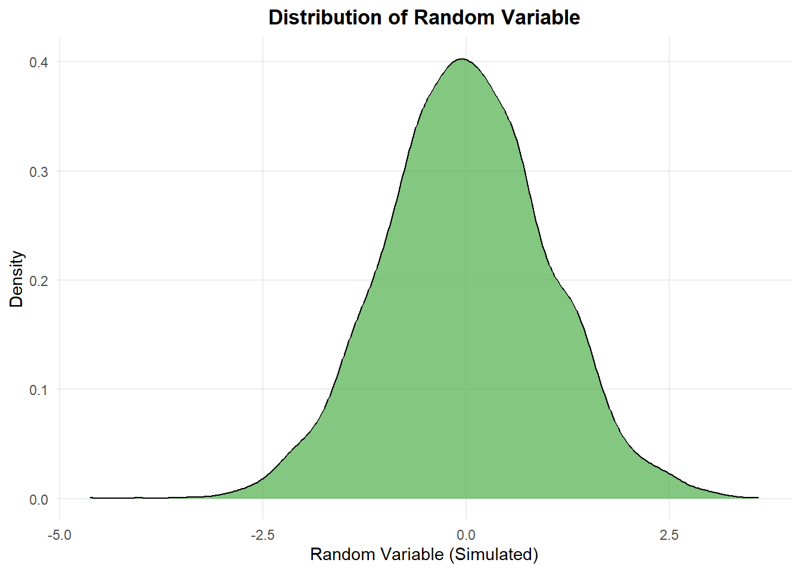
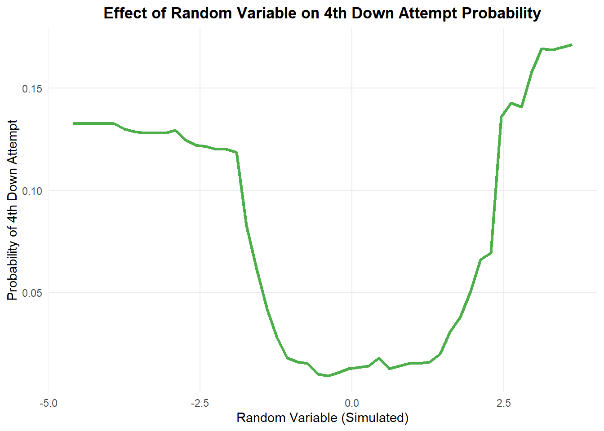
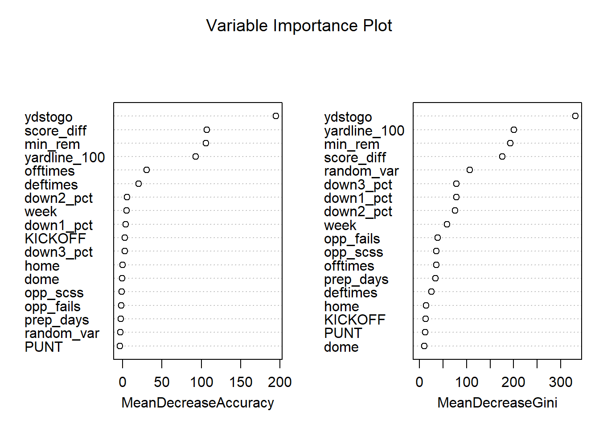
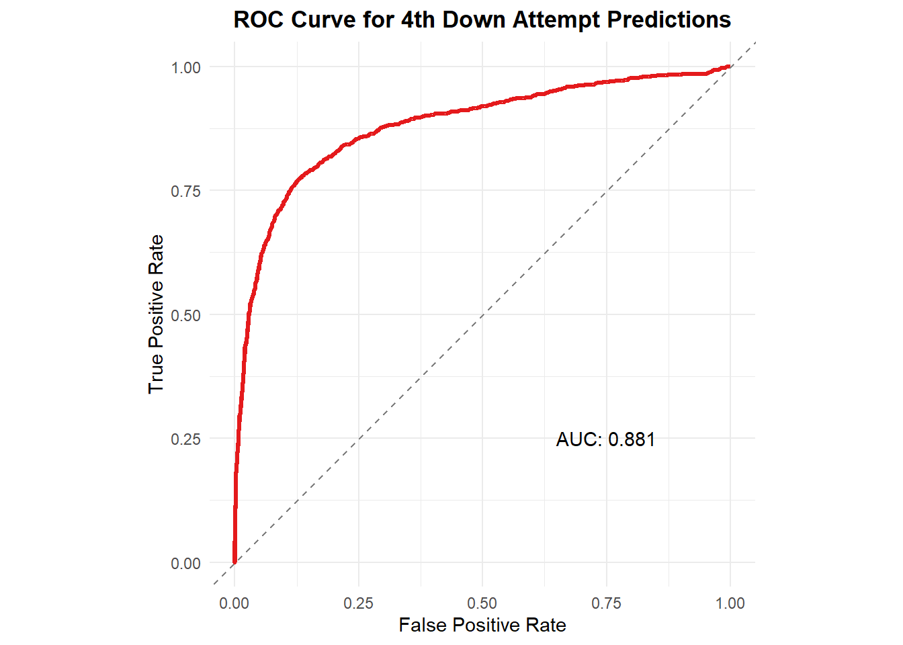
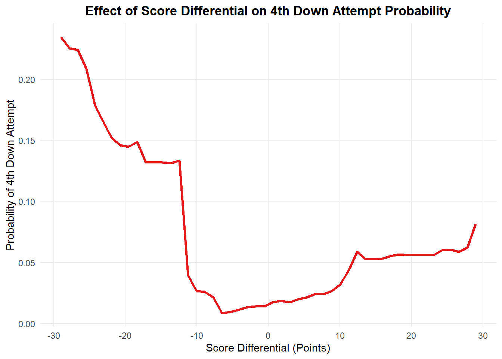
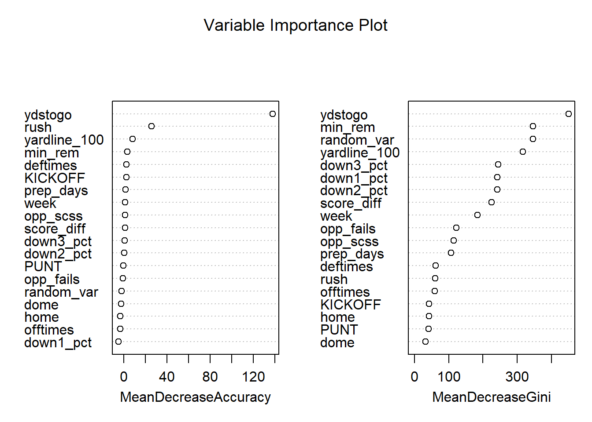
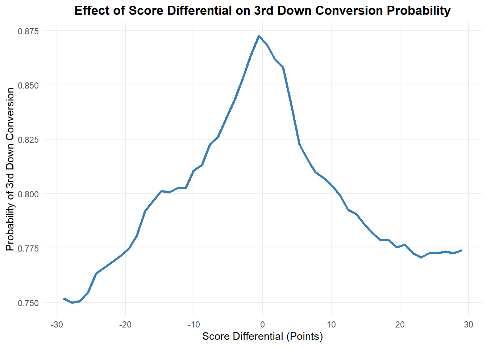
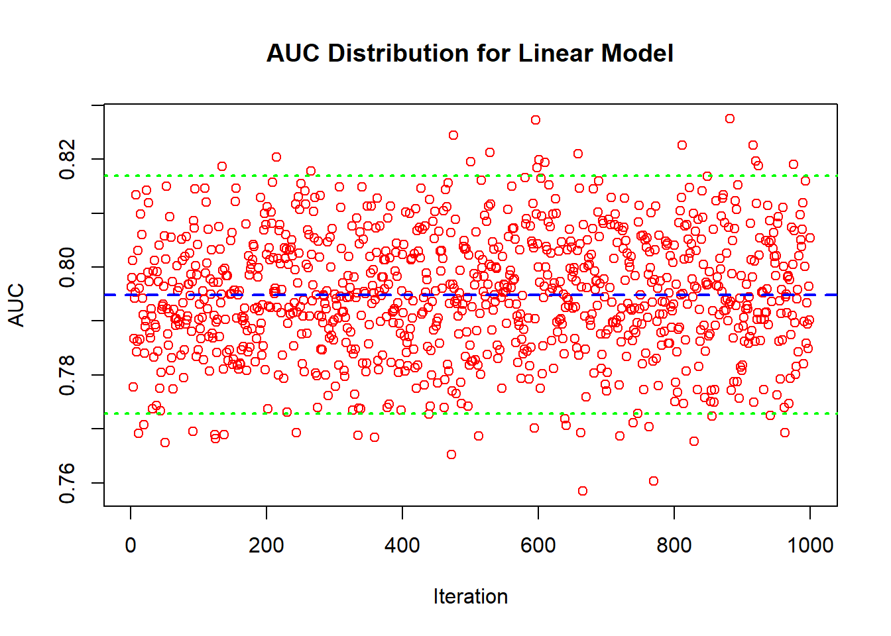

A Predictive and Casual Analysis of Contributing Factors for 4th Down Attempt Conversions in the NFL
Simon Raymond
2024-12-04
Introduction
Background
The NFL is a multi-billion dollar industry that has seen rapid growth within the USA and internationally. Davis and End (2010) argue that successful NFL franchises have measurable economic impacts on their local areas. This growth has placed more and more importance on the performance of NFL teams as they fight to win games to increase the popularity of their team. Teams are willing to invest time and money into finding different strategies that assist their organization. One such area that has received much attention is the idea of maximizing the expected win percentages of teams. This leads teams to look to strategies that may be outside of the cultural norm.
For many years in the NFL there seemed to be a consistent standard that on 4th down your team will kick a field goal or punt the ball for better field position. The only exception being the dying moments in a game when teams are desperate. However data display tools have let us see an increase in the overall attempt percentage of teams on 4th down (Raymond, 2024). This is signalling a change in culture.
In the NFL there has been a increasing feeling that teams need to be more aggressive on 4th downs. We have seen teams adopt this strategy. Most famously is the Detroit lion’s mentality since the arrival of their current head coach Dan Campbell. The lions adopted a aggressive strategy to match their aggressive “biting off knee caps” mentality (Birkett, 2023). While the lions have seen success for the first time in years they have also been criticized for their aggressive play calling. This was seen in the 2023-24 playoff divisional round game in which the lions failed a 4th down attempt that was painted as unnecessary (Sporting News, 2024). After this failed 4th down attempt there seemed to be a shift in momentum and the lions lost the game.
Research Problem
A result like this makes us ask the question “Did the lions make the right call?”. This question seems to be getting answered as “yes” by the current literature on this topic. However, we need to know if different teams should go for it or not go for it depending on their situation and team build. For example, it could be argued that the lions should have attempted the crucial 4th down in the 2023-24 playoff divisional round game. However, if the panthers (which were a significantly worse team) were is that situation it could be argued that they should not have been as aggressive. This is because the panthers could have had a worse chance of being able to convert on 4th down.
On top of this we must be weary of any recommendation that is given to a head coach. The truth is that we are not on the field, in the locker rooms, or in team meeting. This means coaches may know more then us in certain game time decision. We must approach this topic with the idea of being more practical and clear to coaches.
Research Questions
This leads us to have a need to answer some key questions about 4th downs in the NFL. First, is are there certain key predictable signals that can be used to decide if a given team should attempt a 4th down? Second, is what key factors or variables about players have predictive power in 4th down attempts? In other words are there players that are more important in 4th down situations when compared to other situations. Finally, do these key factors about players have a casual effect on the outcome of 4th down attempts? Answering these questions will allow coaches to look for key signals in 4th down situations and to know which players to start on that 4th down if it is decided to attempt. This also can be applied in discovering specialty players that are overlooked due to poor performances in situations that are not similar to 4th down.
Literature Review
Risk aversion
Much of this problem revolves around the idea that NFL coaches are acting overly averse to risk which is lowering their expected wins. Romer (2006) found that teams had begun to move towards a more conservative or safe strategy in the NFL. He argues that teams value successful gambles more then the expected win percentage in a game. He theorizes that the poor decision making is either due to risk aversion or it is due to poor information.
To further this point using matching analysis, Yam and Lopez (2018) quantified this conservative decision-making, finding that teams could gain approximately 0.4 wins per year by being more aggressive on fourth downs.
Goff and Locke (2019) found when revisiting Romer’s framework that Romer’s core findings are still held to be true. However they argue that overly conservative calls are not due to poor decision making. Instead they point to risk aversion as they estimate that coaches are willing to give up two-thirds of a expected point to avoid the uncertainty of fourth down attempts.
On top of this, there seems to be evidence that coaches are more cautious when their job is on the line. Owens and Roach (2018) found that in the NCAA coaches are relatively more conservative when they are more likely to be fired. At the same time they found when a coach was likely to be promoted that the coach is more aggressive then normal.
Momentum
If a team feels to be “on fire” should they be more aggressive since they feel to have momentum? The most famous literature in this is on the fallacy of the “hot hand”. The hot hand is a cognitive bias that leads people to believe that a person who has a successful outcome is more likely to have a successful outcome in future attempts. Gilovich et al. (1985) investigated the “hot hand” and “shooting streaks” in basket ball. They found that both players and fans believed in the fallacy despite shots being independent of each other. Losak et al. (2023) similarly discovered that fantasy baseball users gravitated towards “hot” players. At the same time they were unable to identify a viable hot hand strategy in DraftKings DFS baseball.
Despite these common findings there does seem to be some evidence of momentum existing in the NFL. Roebber et al.(2022, p. 2) defined momentum in the NFL as “the sustained increase in win probability by a single team over the course of at least 2 successive changes in possession”. With this definition they found that streaks of win probability in football are non-random and are in fact predictable with Artificial Neural Network Models.
Lehman & Hahn (2013) looked to identify momentum across and within games in the NFL. Within-period momentum was found to encourage teams to take more risks. Negative within-period momentum was in-turn found to encourage teams to take less risks. It was also discovered that across-period momentum has a effect only until a within period momentum was established in a game.
Heckman correction
The Heckman correction is a two-step estimation process that is used to correct for sample selection bias (Heckman, 1979). The first step is to estimate the probability of selection into the sample. The second step is to estimate the outcome of interest. Heckmans original paper was focused on applying probit and linear models for this method. However, due to the non-linearities in NFL data we will be looking to apply a non-parametric model to our situation. I am currently in the process of looking at recent literature and applications of self sample selection bias corrections with non-parametric models.
Here are some papers that I will be looking at:
- Klein and Spady (1993)
- Das, Newey, and Vella (2003)
- Cook (2022)
I currently am looking most specifically at semi-parametric models.
Research Gap
The gap in the current research revolves around the gap in quality data. Currently we see many studies include team grades or summary statistics about teams that are playing against each other. This type of generalization is needed for econometric models that cannot handle large amounts of variables. However, our non-parametric models will be able to handle data with thousands of different variables. To take advantage of this we will have information about every single player that is on the field when the ball is snapped. This will allow us to have better prediction power then previous researchers. This lack of work accomplished with highly specific data then in turn creates a lack in researchers identifying key variables about different players in the field. This is why our combined approach of predictive and casual tools will be so effective. We will be able to see what variable are or are not having a effect on 4th down conversions.
Data
Play by Play (PBP)
Our data consists of play by play data from the NFL. This data is pulled from the nflverse package in R (Carl et al., 2024). The data ranges from 2016 to 2023. The reason for this is that after 2016 the NFL started to put tracking chips in NFL player’s jerseys. This gives us information after 2016 of what players are on the field for each snap. As a note a weeks 16-18 in 2023 are missing gsis_ids of who was on the field and the data in 2016 is described as not as reliable. A gsis_id is a unique identifier for a player and it crucial in our work.
To create my data I have merged play by play data, participation data, roster data, and injury data. However, we may create different versions of our data depending on our models that we choose to use.
First, we have a third down data set. This data has the purpose of allowing us to test our Heckman Variable’s validity in showing that a variable has no predictive power on a third down conversion. We then use this to bolster our argument that the variable in question has no predictive power on a 4th down conversions. We also will have a fourth down “attempts” data set. This data set will be used to show that our Heckman Correction variable does have strong prediction power on the decision to attempt a 4th down or not. (this situation is more unbalanced). Finally, the end goal is to be using data of purely 4th down attempts to predict the conversion of a play.
While it is subject to change the 3rd down data set has 56,000+ rows and 1300+ columns. The 4th down attempts data set has 33,000+ rows and 1300+ columns.
Pro Football Focus (PFF)
Our weekly player data is a combination of reports from Pro Football Focus, (2024) from 2016 to 2023. This data is downloaded in the form of different positional reports. For example, we downloaded the receiving reports labeled as “Receiving Grades, Receiving Depth, Receiving Concept, and Receiving vs Scheme”. Each row in these reports contains information how a player did in certain areas covered by that report that week. This by itself is useless to us, as we need to merge every report into each other.
We ended up with a data set that is 158,000+ rows and 1,500+ columns. Each column is a different stat that may or may not apply to a player (e.g. a receiving grade does not apply to a DE).
So for each row in this engineered data set there is a player, their basic information, the year and week, and 1,500+ variables of how that player preformed in a specific week.
Merging
A problem we encountered is that the PFF players do not have a gsis_id. They instead have a pff_id. Unfortunately not all players with a gsis_id have a available pff_id. On top of that the names between the data sets do not always match up. Currently I am working on different methods of matching these players between datasets. This match I currently am doing in a multi-step process off of standardized names, parts of names, positions, years played, and teams. For the players that have a pff_id assigned to their gsis_id this matching process is not needed. As a part of our contribution to this field of study I will be providing the dataset of 4900+ players with matched PFF and GSIS IDs. If you desire the code for this process to extend it to other years or play types please reach out to me via email.
The most key aspect of this entire thesis is the merging of the PFF and PBP datasets. We can start with how in our PBP data we have the gsis_ids of every player that was on the field at the time of the play. A gisi_id is the main unique identifier for the player. So we need to take our PFF data and for each player merge it into the PBP data.
We have multiple types of PBP datasets that we are merging PFF data into. First we have a 3rd down data set that is used to bolster our argument that are exogenous variable that is used for correction of self selection sample bias has no effect on 4th down completions.
Our 4th down data set on the other hand has multiple uses. First, it will be used to show that our exogenous variable has a effect on the decision to attempt a 4th down. In this case the dependent variable is the decision to attempt a 4th down. Second, the 4th down data will be filtered down to situations where a team “went for it” with a run or a pass play. In this case the dependent variable is the completion of a 4th down.
I currently am hesitant to be stating the exact numbers of columns and rows within this data as these numbers will change as we engineer new features, generalize our existing features or filter our data more. However both the 3rd down and 4th down data currently have over 45,000 columns without any forms of generalization. Our 3rd down data set currently consists of 56,000+ rows and our 4th down data set consists of 33,000+ rows. However when our 4th down set is filtered to only include “went for it” plays we get 400-900 observations a year.
Here are some general areas that the data captures:
- Game situation (down, distance, score, time remaining, location)
- Player specifics (“rushing years/passing yards/blocking grades” in the past seasons)
- Physical player traits (height, weight, age, etc.)
- Player injury history (e.g. days since last injruy)
- Team injury history (e.g. specific type of injuries in last week/year)
Methodology
Measuring Accuracy
In order to measure the accuracy of our models we will be using the area under the curve (AUC) of the ROC curve. This is a common metric used in binary classification problems. The ROC curve is a plot of the true positive rate against the false positive rate for the different possible thresholds of a confusion table. These values will be tested and reported over 10,000 tests of bootstrapped test data.
Our methodology involves two main types of tools. These are predictive tools and casual econometrics tools.
Predictive Tools
These tools are going to be used to predict the outcome of a 4th down attempt. If these outcomes of these predictions are acceptable we will identify what variables had predictive power in our non-parametric models. The models that will be used are Random Forest, GBM boosting, XGBoosting, and possibly Neural Networks. All boosting models will be tuned with some form of grid search.
Casual econometrics tools
After our predictive modeling we will be left with variables that have prediction power on the outcome of a 4th down attempt. Then we turn to our casual econometrics tools. Our situation faces one key problem. There is selection bias around the 4th down attempts. This means that we never see the outcomes of 4th down attempts that never happened. In those situations the ball was punted or a field goal was attempted. To try to control this selection bias we will be using a Heckman correction. A form of OLS can be pursued with the Heckman correction. However, we will also be looking to apply some form of non-linear model to our situation. This is due to the intense non-linearities that are found in NFL data.
This self selectiong bias is created in our current world by the fact that the coach is making a decision about “going for it” or not “going for it” on 4th down. When we control for this we are attempting to create a world where the 4th down attempts that we see are free from bias. This is to say it creates a world where we do actaully see all the 4th down attempts that could have happened.
The Heckman correction requires a key exogenous variable that predicts 4th attempts but not the results of those attempts. The variable I propose is score differential. The score differential without a doubt has predicting power on whether or not a team attempts a 4th down. The question is does it have prediction power on the actual conversion of the 4th down. I would argue not.
My one fear was originally that score differential signals a “better” team. Then since that team is “better” the 4th down result will receive prediction power from the score differential. However, if we account for how good the team are I believe that argument would not hold up. Even without accounting for how good teams are I found that the score differential was almost useless for predicting the 3rd down conversion result (in this case we used 3rd down plays to stand in for 4th down conversions). We can examine the following example. Imagine a world where the panthers (weaker team) are playing the saints (average team). The panthers are losing by 30 points so the score differential is -30. Obviously here the panthers probably have a below average chance of conversion on a 4th down. However on 4th down the teams swap and the chiefs (better team) take over for the panthers. I don’t think that it is fair to say that the 30 point deficit will make it harder for the chiefs to convert on 4th down. Similarly one may say that the Chiefs may have a tougher time converting on this 4th down because they are playing in a more desperate situation. The factors though of this desperate situation can also be accounted for.
This seems to be backed up by the beginnings of my analysis.
Expected Outcomes
Currently we are predicting 3rd down conversions with a AUC that is in the mid 60s range. This is not incredible but it makes sense as the baseline predictions only account for some basic situation variables. I expect to have presentable AUC in the 80s range when we work on our properly merged 4th down data set. Then i believe that variables will be identified that will be proven to have a casual effect on 4th down conversions. In this process however it is important to recognize the significance of finding a variable to not have prediction power or a casual effect.
Timeline
- I will have the data merged by the beginning of the winter 2025 semester (names matching).
- We then will be able to move to modeling and analysis.
Begining Analysis
model_3rd3 <- read_csv("model_3rd3.csv")## Rows: 7022 Columns: 20
## ── Column specification ────────────────────────────────────────────────────────
## Delimiter: ","
## dbl (20): week, ydstogo, yardline_100, posteam_timeouts_remaining, defteam_t...
##
## ℹ Use `spec()` to retrieve the full column specification for this data.
## ℹ Specify the column types or set `show_col_types = FALSE` to quiet this message.model_4th3 <- read_csv("model_4th3.csv")## Rows: 4226 Columns: 19
## ── Column specification ────────────────────────────────────────────────────────
## Delimiter: ","
## dbl (19): week, attempt, ydstogo, yardline_100, minutes_remaining, posteam_t...
##
## ℹ Use `spec()` to retrieve the full column specification for this data.
## ℹ Specify the column types or set `show_col_types = FALSE` to quiet this message.Notes before proceeding
- For display purposes most of the code that produces the data and plots are not shown. However, the code will be made available via my personal github page (https://github.com/SimonRaymond2003).
- The OLS model takes no account for Heteroskedasticity or Autocorrelation.
- The current data ignores how good the teams are (offensive and defensive). For that reason our prediction power doesn’t seem incredible. Howeve, with the proper data that we are creating we can improve our results.
- The relationships are definitely non-linear. In some cases though, I could engineer the data to help OLS. For example the minutes left in the game could be two columns one that is the half and one that is the time from 0-30. However, our end goal is to be using a non-linear model.
- I added a random (simulated/useless) variable to the data to give us a reference point of what variables are useless in our random forest model.
- Week 1 was removed from the data due to how we created some of our variables.
- The data is scaled.
- the ROCR curves are from one run of random forest (double check if I don’t need to loop it because it is random forest)
Measures of prediction power Random Forest
MDI (gini/node purity)
As Gini impurity decreases (meaning nodes become more pure), the MDI value increases.
This measures how good a variable is at promoting node purity during the splits. This is for the training of the model. This leads MDI to not always be the best measure. MDI thrives when variables have a lot of categories, variability or are continuous. For example, a categorical variable with 10 levels will have a higher MDI than a binary variable.
That is why the random variable did good in this measure. The splits in the trees will sometimes use useless variables. This is because it fits the training data and it is very normal for RF to use bad predictors (that is the entire point of randomforest). However MDI can make it appear that unimportant variables are in fact important.
MDA (Mean Descrease in Accuracy)
This looks are more how the model would do if we removed the variable in question from the model. A negative MDA means that the model would do better without the variable. It is more robust and we need to pay more attention to this rather than MDI.
Partial Dependency Plots (PDP)
Partial dependency plots in Random Forests show how one variable affects predictions while accounting for all other variables in a realistic way. Rather than arbitrarily fixing other variables to constants, the method uses all actual combinations of other variables from the training data.
For example, if we want to understand how score differential affects fourth down decisions, the process works like this: For each potential score differential value (say -14 points), the model temporarily sets every play in the dataset to have that score differential while keeping all other features (like field position, time remaining, etc.) exactly as they occurred in real games. It then averages all these predictions to show the isolated effect of being down 14 points.
A Caution with PDPs
To issue a strong warning however, here is a PDP of a variable that has absolutely no connection with 3rd down conversions:
Here is the distribution plot of the random variable we are using:
rv_plot
Here is the PDP of the random variable:
# Display the plot
pdp_random
This plot will seem confusing. Why does a useless simulated variable seem to have predictive power. This random variable does not have predictive power or a casual effect just because of the PDP plot! As we will see, this random variable has negative MDA. While it has a very high MDI that is simply due to the specificness of the variable. This plot displays how the random forest model is using it. Models like random forest and XGBoosting are designed to give a voice to weak predictors. The PDP simply shows how the model is using that variable. The model may be incorrectly picking up on a pattern that is not truly within our data. This is proven by the variable’s lack of use near to the center of its probability distribution. However, as we move away from the from the center of the random variable’s distribion we get more specificness that the random forest model thinks is useful for prediction. There are less observations near the tails of our distribution and therefore more opportunities to make a obscure split to help our leaf node purity(gini score) in the training process. This example needs to serve as a strong caution when observing our PDP plots in the following analysis.
The Data
Points about the data
The data we are using is from the 2023 NFL season. We ended up removing the first week of the season due to how we created some of our variables. In preparing our data for OLS analysis we decided to remove the temperature and wind variables since they contained NA values. If the score differential was above 30 or below -30 then we removed that observation. The non-binary variables were scaled while preserving the column names.
Variable Descriptions
attempt(4th down data): Binary indicator (1/0) representing whether a coach elected to attempt a 4th down conversion rather than punt or attempt a field goalconverted(3rd down data): Binary indicator (1/0) showing if the play resulted in a successful conversion for a first downdown1_pct: Running play percentage on 1st downs so far in the gamedown2_pct: Running play percentage on 2nd downs so far in the gamedown3_pct: Running play percentage on 3rd downs so far in the gameopp_scss(previouslysuccesses): Number of successful 4th down conversions by the opposing team in their previous gameopp_fails(previouslyfailures): Number of failed 4th down attempts by the opposing team in their previous gamescore_diff: Point differential at the time of the play (positive values indicate the offensive team is winning)min_rem(previouslyminutes_remaining): Minutes remaining in the gameydstogo: Yards needed to achieve a first downyardline_100: Distance in yards from the opponent’s endzone (e.g., 75 means the ball is on the offensive team’s 25-yard line)rush(3rd down data only): Binary indicator (1/0) for whether the play was a rushing attempt or a passofftimes(previouslyposteam_timeouts_remaining): Number of timeouts remaining for the offensive teamdeftimes(previouslydefteam_timeouts_remaining): Number of timeouts remaining for the defensive teamweek: Week number of the NFL season (Week 1 excluded)prep_days: Number of days the team had to prepare for this gamehome: Binary indicator (1/0) for whether the offensive team is playing at homedome: Binary indicator (1/0) for whether the game is being played in a domeKICKOFF: Binary indicator (1/0) for whether the offensive team received the ball via kickoffPUNT: Binary indicator (1/0) for whether the offensive team received the ball via punt Note: If both KICKOFF and PUNT are 0, the team received possession through another method (e.g., turnover)random_var: Simulated random variable included as a reference point for evaluating variable importance in our models
glimpse(model_3rd3)## Rows: 6,915
## Columns: 20
## $ converted <dbl> 1, 1, 0, 0, 0, 0, 1, 0, 1, 1, 0, 0, 1, 1, 1, 1, 1, 1, 1, …
## $ down1_pct <dbl[,1]> <matrix[26 x 1]>
## $ down2_pct <dbl[,1]> <matrix[26 x 1]>
## $ down3_pct <dbl[,1]> <matrix[26 x 1]>
## $ opp_scss <dbl[,1]> <matrix[26 x 1]>
## $ opp_fails <dbl[,1]> <matrix[26 x 1]>
## $ score_diff <dbl[,1]> <matrix[26 x 1]>
## $ min_rem <dbl[,1]> <matrix[26 x 1]>
## $ ydstogo <dbl[,1]> <matrix[26 x 1]>
## $ yardline_100 <dbl[,1]> <matrix[26 x 1]>
## $ rush <dbl> 0, 0, 0, 0, 0, 0, 1, 1, 0, 1, 0, 1, 0, 0, 0, 0, 0, 0,…
## $ offtimes <dbl> 3, 3, 3, 3, 3, 3, 3, 3, 3, 3, 3, 1, 2, 3, 2, 2, 2, 2,…
## $ deftimes <dbl> 3, 3, 3, 3, 3, 3, 3, 3, 3, 3, 3, 2, 3, 2, 3, 3, 3, 3,…
## $ week <dbl> 2, 2, 2, 2, 2, 2, 2, 2, 2, 2, 2, 2, 2, 2, 2, 2, 2, 2,…
## $ prep_days <dbl[,1]> <matrix[26 x 1]>
## $ home <dbl> 0, 0, 1, 0, 1, 0, 0, 0, 1, 1, 1, 0, 1, 0, 1, 1, 1, 1,…
## $ dome <dbl> 0, 0, 0, 0, 0, 0, 0, 0, 0, 0, 0, 0, 0, 0, 0, 0, 0, 0,…
## $ KICKOFF <dbl> 1, 1, 1, 0, 0, 0, 1, 1, 1, 1, 1, 1, 1, 0, 1, 1, 1, 1,…
## $ PUNT <dbl> 0, 0, 0, 1, 0, 1, 0, 0, 0, 0, 0, 0, 0, 0, 0, 0, 0, 0,…
## $ random_var <dbl[,1]> <matrix[26 x 1]>glimpse(model_4th3)## Rows: 4,163
## Columns: 19
## $ attempt <dbl> 0, 0, 0, 0, 0, 0, 0, 0, 0, 1, 0, 0, 0, 0, 0, 0, 0, 1, 0, …
## $ down1_pct <dbl[,1]> <matrix[26 x 1]>
## $ down2_pct <dbl[,1]> <matrix[26 x 1]>
## $ down3_pct <dbl[,1]> <matrix[26 x 1]>
## $ opp_scss <dbl[,1]> <matrix[26 x 1]>
## $ opp_fails <dbl[,1]> <matrix[26 x 1]>
## $ score_diff <dbl[,1]> <matrix[26 x 1]>
## $ min_rem <dbl[,1]> <matrix[26 x 1]>
## $ ydstogo <dbl[,1]> <matrix[26 x 1]>
## $ yardline_100 <dbl[,1]> <matrix[26 x 1]>
## $ offtimes <dbl> 3, 3, 3, 3, 3, 3, 0, 2, 2, 2, 3, 3, 3, 3, 3, 3, 3, 3,…
## $ deftimes <dbl> 3, 3, 3, 3, 3, 3, 1, 2, 2, 2, 3, 3, 3, 3, 3, 3, 3, 3,…
## $ week <dbl> 2, 2, 2, 2, 2, 2, 2, 2, 2, 2, 2, 2, 2, 2, 2, 2, 2, 2,…
## $ prep_days <dbl[,1]> <matrix[26 x 1]>
## $ home <dbl> 1, 0, 1, 0, 0, 1, 0, 1, 0, 1, 1, 1, 0, 0, 1, 0, 0, 1,…
## $ dome <dbl> 0, 0, 0, 0, 0, 0, 0, 0, 0, 0, 0, 0, 0, 0, 0, 0, 0, 0,…
## $ KICKOFF <dbl> 1, 0, 0, 0, 1, 1, 1, 1, 0, 0, 1, 1, 0, 1, 0, 0, 1, 0,…
## $ PUNT <dbl> 0, 1, 0, 1, 0, 0, 0, 0, 1, 1, 0, 0, 0, 0, 1, 1, 0, 1,…
## $ random_var <dbl[,1]> <matrix[26 x 1]>OLS
4th down “will the coach attempt to go for it?”
# Fit OLS model
OLS_4th <- lm(attempt ~ ., data = model_4th3)
summary(OLS_4th)##
## Call:
## lm(formula = attempt ~ ., data = model_4th3)
##
## Residuals:
## Min 1Q Median 3Q Max
## -0.7151 -0.2742 -0.1290 0.2232 1.2636
##
## Coefficients:
## Estimate Std. Error t value Pr(>|t|)
## (Intercept) 0.321665 0.032383 9.933 < 2e-16 ***
## down1_pct 0.007858 0.006530 1.203 0.2289
## down2_pct -0.004963 0.006890 -0.720 0.4714
## down3_pct 0.011405 0.006487 1.758 0.0788 .
## opp_scss 0.009169 0.006116 1.499 0.1339
## opp_fails -0.001308 0.006023 -0.217 0.8281
## score_diff -0.093445 0.006343 -14.733 < 2e-16 ***
## min_rem -0.073849 0.006472 -11.410 < 2e-16 ***
## ydstogo -0.121609 0.006180 -19.679 < 2e-16 ***
## yardline_100 -0.053069 0.006266 -8.469 < 2e-16 ***
## offtimes -0.054160 0.008803 -6.152 8.36e-10 ***
## deftimes 0.020711 0.008597 2.409 0.0160 *
## week 0.002297 0.001162 1.977 0.0481 *
## prep_days -0.002884 0.006045 -0.477 0.6334
## home 0.001589 0.012054 0.132 0.8952
## dome 0.020580 0.015522 1.326 0.1849
## KICKOFF -0.027270 0.018515 -1.473 0.1409
## PUNT -0.024252 0.018353 -1.321 0.1864
## random_var -0.006351 0.005965 -1.065 0.2871
## ---
## Signif. codes: 0 '***' 0.001 '**' 0.01 '*' 0.05 '.' 0.1 ' ' 1
##
## Residual standard error: 0.3842 on 4144 degrees of freedom
## Multiple R-squared: 0.201, Adjusted R-squared: 0.1975
## F-statistic: 57.92 on 18 and 4144 DF, p-value: < 2.2e-16vif(OLS_4th)## down1_pct down2_pct down3_pct opp_scss opp_fails score_diff
## 1.202624 1.338873 1.186753 1.054833 1.023034 1.134456
## min_rem ydstogo yardline_100 offtimes deftimes week
## 1.181236 1.076950 1.107316 1.237650 1.281292 1.037317
## prep_days home dome KICKOFF PUNT random_var
## 1.030535 1.024332 1.023471 2.398000 2.255370 1.0033733rd down “will the play convert to a 1st down?”
# Fit OLS model
OLS_3rd <- lm(converted ~ ., data = model_3rd3)
summary(OLS_3rd)##
## Call:
## lm(formula = converted ~ ., data = model_3rd3)
##
## Residuals:
## Min 1Q Median 3Q Max
## -0.7277 -0.3986 -0.2124 0.4833 1.2555
##
## Coefficients:
## Estimate Std. Error t value Pr(>|t|)
## (Intercept) 0.3623399 0.0336891 10.755 < 2e-16 ***
## down1_pct 0.0070500 0.0060850 1.159 0.246667
## down2_pct -0.0057824 0.0063937 -0.904 0.365822
## down3_pct 0.0084054 0.0060313 1.394 0.163471
## opp_scss 0.0002207 0.0057122 0.039 0.969176
## opp_fails 0.0001537 0.0056266 0.027 0.978212
## score_diff -0.0021870 0.0059106 -0.370 0.711383
## min_rem 0.0059934 0.0059996 0.999 0.317846
## ydstogo -0.1527965 0.0058681 -26.038 < 2e-16 ***
## yardline_100 0.0199008 0.0057668 3.451 0.000562 ***
## rush 0.0820480 0.0137360 5.973 2.44e-09 ***
## offtimes 0.0061106 0.0086247 0.709 0.478657
## deftimes 0.0024305 0.0089623 0.271 0.786251
## week -0.0011351 0.0010727 -1.058 0.290020
## prep_days -0.0062438 0.0056286 -1.109 0.267338
## home 0.0062293 0.0112071 0.556 0.578338
## dome 0.0047764 0.0144059 0.332 0.740235
## KICKOFF 0.0143616 0.0172821 0.831 0.405995
## PUNT -0.0137044 0.0171643 -0.798 0.424651
## random_var -0.0001875 0.0055568 -0.034 0.973087
## ---
## Signif. codes: 0 '***' 0.001 '**' 0.01 '*' 0.05 '.' 0.1 ' ' 1
##
## Residual standard error: 0.4617 on 6895 degrees of freedom
## Multiple R-squared: 0.1127, Adjusted R-squared: 0.1103
## F-statistic: 46.1 on 19 and 6895 DF, p-value: < 2.2e-16vif(OLS_3rd)## down1_pct down2_pct down3_pct opp_scss opp_fails score_diff
## 1.201236 1.326194 1.180097 1.058535 1.027062 1.133359
## min_rem ydstogo yardline_100 rush offtimes deftimes
## 1.167745 1.117116 1.078863 1.097724 1.173236 1.210723
## week prep_days home dome KICKOFF PUNT
## 1.037015 1.027783 1.018693 1.021203 2.410760 2.251229
## random_var
## 1.001742Random Forest
4th down “will the coach attempt to go for it?”
Here we display the results on a 4th down random forest model. This model predicts attempts and is run with a ntree = 1500. We are reporting Out Of Bag results.
# Print results
print(importance_df)## Variable 0 1 MeanDecreaseAccuracy MeanDecreaseGini
## 1 ydstogo 126.002710 185.8722726 195.2746981 330.65192
## 2 score_diff 62.623935 108.6540273 113.2869194 176.57889
## 3 min_rem 59.775285 101.6495425 102.9746315 194.10616
## 4 yardline_100 47.413516 106.6503391 96.9275630 199.55927
## 5 offtimes 20.350509 25.9233860 31.6439314 35.75933
## 6 deftimes 21.810413 3.1921930 21.4321912 26.21388
## 7 week 0.184814 9.0178930 5.0208110 59.58649
## 8 down1_pct 1.040355 7.1406478 4.9573135 78.50463
## 9 down2_pct 2.341873 4.8599441 4.6730988 76.33280
## 10 down3_pct -2.834120 8.4329170 2.3459534 78.25188
## 11 KICKOFF 3.322896 -2.1770402 1.6336814 13.59309
## 12 home -3.190402 6.2082496 1.1166262 14.37036
## 13 dome -2.998111 3.3339568 -0.4614668 10.29600
## 14 random_var -1.503282 -0.1644719 -1.3080810 106.82509
## 15 prep_days -4.433239 3.4822121 -1.6567989 33.23136
## 16 PUNT -2.835734 -0.3526549 -2.6332261 12.66409
## 17 opp_scss -5.791980 3.3702832 -2.9676177 36.36877
## 18 opp_fails -5.976563 3.5040960 -2.9795022 38.79649print(paste("OOB AUC:", round(oob_auc, 3)))## [1] "OOB AUC: 0.881"# Plot variable importance
varImpPlot(rf4,
sort = TRUE,
main = "Variable Importance Plot",
n.var = min(20, ncol(model_4th3)-1))
rocr_4th
This is a very good AUC despite missing how good the teams are. This makes sense as NFL coaches are trying to make optimal decisions for their team to win.
pdp_4th
Why do we see score differential influencing prediction of attempts in our random forest model in this way? First we note that if a team is losing they are more desperate. These more desperate teams are more likely to go for it on 4th down. On the other hand if a team is winning then they feel more aggressive. These teams that are winning are also more likely to be a better team. This can be captured with other variables as we proceed with our research.
3rd down “will the play convert to a 1st down?”
Here we display the results of a 3rd down random forest model. This model predicts conversion and is run with a ntree = 1500. We are reporting Out Of Bag results.
# Print results
print(importance_df)## Variable 0 1 MeanDecreaseAccuracy MeanDecreaseGini
## 1 ydstogo 83.05588524 113.3980429 135.4501676 450.67840
## 2 rush 4.47797643 30.9748465 26.9545298 61.24723
## 3 yardline_100 13.63186583 -5.5596880 7.0536067 317.15580
## 4 min_rem 3.54461863 0.9815335 3.4842691 347.34838
## 5 down3_pct 4.31802415 -3.2429980 1.2890553 244.78464
## 6 opp_scss -1.48554389 3.5069321 1.0835659 114.50682
## 7 deftimes 2.39263831 -2.1641496 0.5150940 61.97243
## 8 score_diff -0.27079796 0.7225512 0.2600402 225.60373
## 9 down2_pct -1.79179734 2.4421374 0.2068352 240.72539
## 10 KICKOFF -3.61701302 4.1027136 -0.1029305 42.81354
## 11 prep_days -0.06818342 -0.3356903 -0.2627515 108.04845
## 12 week 0.22143290 -1.0075717 -0.4993756 183.80205
## 13 PUNT -1.84481468 1.1133976 -0.6286028 41.50121
## 14 opp_fails -2.82654634 0.2479793 -2.1148818 122.79910
## 15 dome -2.67653420 -0.4402697 -2.4471017 32.10255
## 16 random_var -0.15735623 -3.6936104 -2.4807033 347.91162
## 17 home -1.80997483 -2.0503768 -2.6621262 42.00402
## 18 down1_pct -4.88187596 0.8716234 -3.3666895 241.30277
## 19 offtimes -4.05956285 -2.0547905 -4.6976606 59.08749print(paste("OOB AUC:", round(oob_auc, 3)))## [1] "OOB AUC: 0.668"# Plot variable importance
varImpPlot(rf3,
sort = TRUE,
main = "Variable Importance Plot",
n.var = min(20, ncol(model_3rd3)-1))
rocr_3rd
This is a bad AUC which currently makes sense as it is a baseline. This example does not have how good the teams or players are.
# Create plot
pdp_3rd <- ggplot(plot_data, aes(x = score_diff, y = probability)) +
geom_line(color = "#377EB8", size = 1.2) +
labs(
title = "Effect of Score Differential on 3rd Down Conversion Probability",
x = "Score Differential (Points)",
y = "Probability of 3rd Down Conversion"
) +
theme_minimal() +
theme(
plot.title = element_text(hjust = 0.5, face = "bold"),
panel.grid.minor = element_blank()
)pdp_3rd
Why does the RF model use score differential in the way that it does? If the score differential is 0 then the team is acting as it should. If a team is winning that team is often overly cautious which is bad in terms of your performance. If a team is losing then that team may have to be overly aggressive which is also bad in terms of your performance. Especially because this type of aggresion is not the calculated form but it is often the forced kind. These points are once again variables that we can control for when using score differential as our exogenous variable in our selection bias correction. For example we have the yards to go for 4th downs which is a huge indicator of desperation along with the time left in the game. We can also look to use how far the QB is throwing the ball or even the play call and formation to control for desperation.
Proof of non-linearities
As we can imagine NFL data is riddled with different types of non-linearities. For example the relationship between the score differential and the probability of a 4th down attempt is not linear. There are jumps in effect around scoring intervals of 3, 7 and 8 due to the scoring system in the NFL. This leads us to look more at using non-parametric models in our analysis. While the self sample selection bias correction was founded as a parametric model there is literature that supports us using a non-parametric model.
In this following section keep in mind that our OOB AUC for our random forest model with 4th down data was 0.88. In this case we are predicting if a team will attempt a 4th down pass or rushing play. If we see that a linear regression model is unable to compete with our random forest model that is a sign of non-linearities in the data. In that case we will go a step further and apply boosting methods.
Here we will display the results of a algorithm that runs the lm() function which preforms OLS on 1000 bootstrapped samples of the 4th down data. The reported values are from the test samples that are bootstrapped.
# Plot results
plot(auc, col = "red", main = "AUC Distribution for Linear Model",
xlab = "Iteration", ylab = "AUC")
abline(h = mean(auc), col = "blue", lwd = 2, lty = 2)
abline(h = mean(auc) - 1.96 * sd(auc), col = "green", lwd = 2, lty = 3)
abline(h = mean(auc) + 1.96 * sd(auc), col = "green", lwd = 2, lty = 3)
# Print summary statistics
cat("Mean AUC:", mean(auc), "\n")## Mean AUC: 0.7951987cat("95% CI: [", mean(auc) - 1.96 * sd(auc), ",", mean(auc) + 1.96 * sd(auc), "]\n")## 95% CI: [ 0.774153 , 0.8162443 ]We see a significantly worse performance then with a random forest model.
References
Cook, J. A. (2022). Sample-Selection-Adjusted Random Forests. International Journal of Data Science and Analytics, 14, 375-388. http://dx.doi.org/10.2139/ssrn.4225014
Das, M., Newey, W. K., & Vella, F. (2003). Nonparametric estimation of sample selection models. The Review of Economic Studies, 70(1), 33-58. https://doi.org/10.1111/1467-937X.00236
Gilovich, T., Vallone, R., & Tversky, A. (1985). The hot hand in basketball: On the misperception of random sequences. Cognitive Psychology, 17(3), 295-314. https://doi.org/10.1016/0010-0285(85)90010-6
Goff, B. L., & Locke, C. (2019). Revisiting Romer: Digging Deeper Into Influences on NFL Managerial Decisions. Journal of Sports Economics, 20(5), 673-694. https://doi.org/10.1177/1527002518798686
Heckman, J. J. (1979). Sample Selection Bias as a Specification Error. Econometrica, 47(1), 153-161. https://doi.org/10.2307/1912352
Klein, R. W., & Spady, R. H. (1993). An efficient semiparametric estimator for binary response models. Econometrica, 61(2), 387-421. https://doi.org/10.2307/2951556
Lehman, D. W., & Hahn, J. (2013). Momentum and Organizational Risk Taking: Evidence from the National Football League. Management Science, 59(4), 852-868. https://doi.org/10.1287/mnsc.1120.1574
Losak, J. M., Stenquist, R., & Lovett, M. (2023). Behavioral Biases in Daily Fantasy Baseball: The Case of the Hot Hand. Journal of Sports Economics, 24(3), 352-372. https://doi.org/10.1177/15270025221128955
Owens, M. F., & Roach, M. (2018). Decision-making on the hot seat and the short list: Evidence from college football fourth down decisions. Journal of Economic Behavior & Organization, 148, 226-245. https://doi.org/10.1016/j.jebo.2018.02.023
Roebber, P. J., Schultz, D. M., & Colle, B. A. (2022). On the existence of momentum in professional football. PLOS ONE, 17(6), e0269604. https://doi.org/10.1371/journal.pone.0269604
Romer, D. (2006). Do Firms Maximize? Evidence from Professional Football. Journal of Political Economy, 114(2), 340-365. https://doi.org/10.1086/501171
Yam, D., & Lopez, M. (2018). Quantifying the Causal Effects of Conservative Fourth Down Decision Making in the National Football League. Available at SSRN: https://ssrn.com/abstract=3114242 or http://dx.doi.org/10.2139/ssrn.3114242
Carl, S., Baldwin, B., Sharpe, L., Ho, T., Edwards, J. (2024). nflverse. Play-by-play data for NFL games. Retrieved from https://nflverse.nflverse.com/.
Pro Football Focus (PFF). (2024). NFL Player Performance Data. Accessed via subscription at https://premium.pff.com/nfl/teams/2024/REGPO.
Raymond, S. (2024). 4th Down Analysis App. Interactive dashboard for analyzing 4th down decisions in the NFL. Available at: https://jzmtko-yigit-aydede.shinyapps.io/NFL_4th_Down_App/.
Sporting News. (2024). Lions’ Dan Campbell criticized for fourth-down decisions in playoff loss to 49ers. Retrieved from https://www.sportingnews.com/us/nfl/news/lions-49ers-dan-campbell-fourth-down-decisions/b54ce7cc05c4d55fc7b46285.
Davis, M. C., & End, C. M. (2010). A winning proposition: The economic impact of successful National Football League franchises. Economic Inquiry, 48(1), 39–50. https://doi.org/10.1111/j.1465-7295.2008.00124.x
Birkett, D. (2024, January 21). On this date: Memorable kneecap speech. Sports Illustrated. Retrieved from https://www.si.com/nfl/lions/news/on-this-date-memorable-kneecap-speech